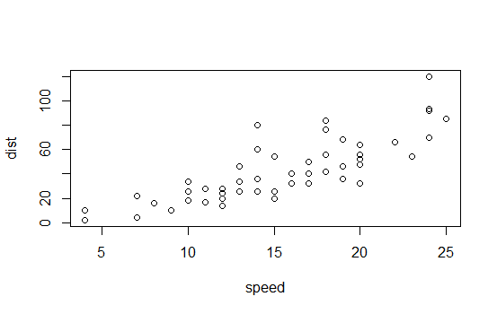
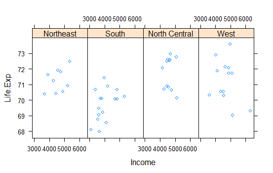
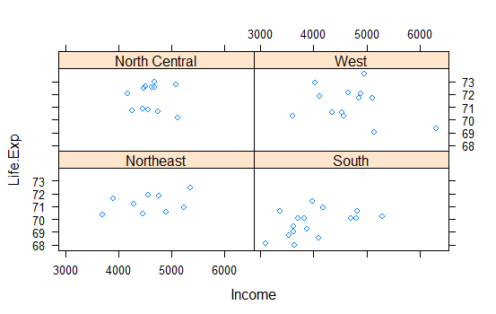
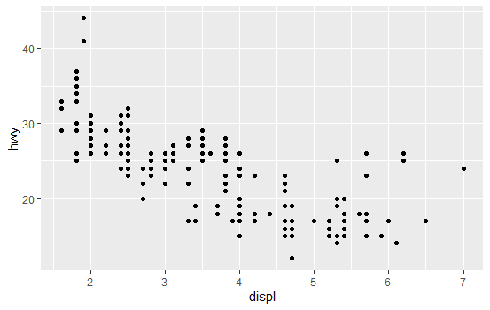

Plotting Systems
R version 4.0.0 (2020-04-24) -- "Arbor Day"
Copyright (C) 2020 The R Foundation for Statistical Computing
Platform: x86_64-w64-mingw32/x64 (64-bit)
R is free software and comes with ABSOLUTELY NO WARRANTY.
You are welcome to redistribute it under certain conditions.
Type 'license()' or 'licence()' for distribution details.
R is a collaborative project with many contributors.
Type 'contributors()' for more information and
'citation()' on how to cite R or R packages in publications.
Type 'demo()' for some demos, 'help()' for on-line help, or
'help.start()' for an HTML browser interface to help.
Type 'q()' to quit R.
setwd("C:/Users/kk/PortableApps/Git/home/k-allika/repos/DataScienceWithR/04_Exploratory_Data_Analysis/week01/workspace")
library(swirl)
| Hi! Type swirl() when you are ready to begin.
swirl()
| Welcome to swirl! Please sign in. If you've been here before, use the same name as you did
| then. If you are new, call yourself something unique.
What shall I call you? Krishnakanth Allika
| Would you like to continue with one of these lessons?
1: Exploratory Data Analysis Plotting Systems
2: No. Let me start something new.
Selection: 1
| Attempting to load lesson dependencies...
| Package ‘ggplot2’ loaded correctly!
| Package ‘lattice’ loaded correctly!
| Package ‘jpeg’ loaded correctly!
| Plotting_Systems. (Slides for this and other Data Science courses may be found at github
| https://github.com/DataScienceSpecialization/courses/. If you care to use them, they must
| be downloaded as a zip file and viewed locally. This lesson corresponds to
| 04_ExploratoryAnalysis/PlottingSystems.)
...
|== | 3%
| In this lesson, we'll give you a brief overview of the three plotting systems in R, their
| differences, strengths, and weaknesses. We'll only cover the basics here to give you a
| general idea of the systems and in later lessons we'll cover each system in more depth.
...
|==== | 5%
| The first plotting system is the Base Plotting System which comes with R. It's the oldest
| system which uses a simple "Artist's palette" model. What this means is that you start
| with a blank canvas and build your plot up from there, step by step.
...
|======= | 8%
| Usually you start with a plot function (or something similar), then you use annotation
| functions to add to or modify your plot. R provides many annotating functions such as
| text, lines, points, and axis. R provides documentation for each of these. They all add to
| an already existing plot.
...
|========= | 11%
| What do you think is a disadvantage of the Base Plotting System?
1: It mirrors how we think of building plots and analyzing data
2: A complicated plot is a series of simple R commands
3: You can't go back once a plot has started
4: It's intuitive and exploratory
Selection: 3
| Nice work!
|=========== | 14%
| Yes! The base system is very intuitive and easy to use when you're starting to do
| exploratory graphing and looking for a research direction. You can't go backwards, though,
| say, if you need to readjust margins or fix a misspelled a caption. A finished plot will
| be a series of R commands, so it's difficult to translate a finished plot into a different
| system.
...
|============= | 16%
| We've loaded the dataset cars for you to demonstrate how easy it is to plot. First, use
| the R command head with cars as an argument to see what the data looks like.
head(cars)
speed dist
1 4 2
2 4 10
3 7 4
4 7 22
5 8 16
6 9 10
| You are really on a roll!
|================ | 19%
| So the dataset collates the speeds and distances needed to stop for 50 cars. This data was
| recorded in the 1920's.
...
|================== | 22%
| We'll use the R command with which takes two arguments. The first specifies a dataset or
| environment in which to run the second argument, an R expression. This will save us a bit
| of typing. Try running the command with now using cars as the first argument and a call to
| plot as the second. The call to plot will take two arguments, speed and dist. Please
| specify them in that order.
with(cars,plot(speed,dist))

| You got it right!
|==================== | 24%
| Simple, right? You can see the relationship between the two variables, speed and distance.
| The first variable is plotted along the x-axis and the second along the y-axis.
...
|====================== | 27%
| Now we'll show you what the function text does. Run the command text with three arguments.
| The first two, x and y coordinates, specify the placement of the third argument, the text
| to be added to the plot. Let the first argument be mean(cars\$speed), the second
| max(cars\\$dist), and the third the string "SWIRL rules!". Try it now.
text(mean(cars\$speed),max(cars\\$dist),"SWIRL rules!")

| You are quite good my friend!
|========================= | 30%
| Ain't it the truth?
...
|=========================== | 32%
| Now we'll move on to the second plotting system, the Lattice System which comes in the
| package of the same name. Unlike the Base System, lattice plots are created with a single
| function call such as xyplot or bwplot. Margins and spacing are set automatically because
| the entire plot is specified at once.
...
|============================= | 35%
| The lattice system is most useful for conditioning types of plots which display how y
| changes with x across levels of z. The variable z might be a categorical variable of your
| data. This system is also good for putting many plots on a screen at once.
...
|=============================== | 38%
| The lattice system has several disadvantages. First, it is sometimes awkward to specify an
| entire plot in a single function call. Annotating a plot may not be especially intuitive.
| Second, using panel functions and subscripts is somewhat difficult and requires
| preparation. Finally, you cannot "add" to the plot once it is created as you can with the
| base system.
...
|================================== | 41%
| As before, we've loaded some data for you in the variable state. This data comes with the
| lattice package and it concerns various characteristics of the 50 states in the U.S. Use
| the R command head to see the first few entries of state now.
head(state)
Population Income Illiteracy Life.Exp Murder HS.Grad Frost Area region
Alabama 3615 3624 2.1 69.05 15.1 41.3 20 50708 South
Alaska 365 6315 1.5 69.31 11.3 66.7 152 566432 West
Arizona 2212 4530 1.8 70.55 7.8 58.1 15 113417 West
Arkansas 2110 3378 1.9 70.66 10.1 39.9 65 51945 South
California 21198 5114 1.1 71.71 10.3 62.6 20 156361 West
Colorado 2541 4884 0.7 72.06 6.8 63.9 166 103766 West
| You are really on a roll!
|==================================== | 43%
| As you can see state holds 9 pieces of information for each of the 50 states. The last
| variable, region, specifies a category for each state. Run the R command table with the
| argument state\$region to see how many categories there are and how many states are in
| each.
table(state\$region)
Northeast South North Central West
9 16 12 13
| Your dedication is inspiring!
|====================================== | 46%
| So there are 4 categories and the 50 states are sorted into them appropriately. Let's use
| the lattice command xyplot to see how life expectancy varies with income in each of the
| four regions.
...
|======================================== | 49%
| To do this we'll give xyplot 3 arguments. The first is the most complicated. It is this R
| formula, Life.Exp ~ Income | region, which indicates we're plotting life expectancy as it
| depends on income for each region. The second argument, data, is set equal to state. This
| allows us to use "Life.Exp" and "Income" in the formula instead of specifying the dataset
| state for each term (as in state\$Income). The third argument, layout, is set equal to the
| two-long vector c(4,1). Run xyplot now with these three arguments.
xyplot(Life.Exp~Income|region,data=state,layout=c(4,1))

| Perseverance, that's the answer.
|=========================================== | 51%
| We see the data for each of the 4 regions plotted in one row. Based on this plot, which
| region of the U.S. seems to have the shortest life expectancy?
1: West
2: South
3: Northeast
4: North Central
Selection: 2
| You got it!
|============================================= | 54%
| Just for fun rerun the xyplot and this time set layout to the vector c(2,2). To save
| typing use the up arrow to recover the previous xyplot command.
xyplot(Life.Exp~Income|region,data=state,layout=c(2,2))

| Your dedication is inspiring!
|=============================================== | 57%
| See how the plot changed? No need for you to worry about margins or labels. The package
| took care of all that for you.
...
|================================================= | 59%
| Now for the last plotting system, ggplot2, which is a hybrid of the base and lattice
| systems. It automatically deals with spacing, text, titles (as Lattice does) but also
| allows you to annotate by "adding" to a plot (as Base does), so it's the best of both
| worlds.
...
|==================================================== | 62%
| Although ggplot2 bears a superficial similarity to lattice, it's generally easier and more
| intuitive to use. Its default mode makes many choices for you but you can still customize
| a lot. The package is based on a "grammar of graphics" (hence the gg in the name), so you
| can control the aesthetics of your plots. For instance, you can plot conditioning graphs
| and panel plots as we did in the lattice example.
...
|====================================================== | 65%
| We'll see an example now of ggplot2 with a simple (single) command. As before, we've
| loaded a dataset for you from the ggplot2 package. This mpg data holds fuel economy data
| between 1999 and 2008 for 38 different models of cars. Run head with mpg as an argument so
| you get an idea of what the data looks like.
head(mpg)
# A tibble: 6 x 11
manufacturer model displ year cyl trans drv cty hwy fl class
1 audi a4 1.8 1999 4 auto(l5) f 18 29 p compact
2 audi a4 1.8 1999 4 manual(m5) f 21 29 p compact
3 audi a4 2 2008 4 manual(m6) f 20 31 p compact
4 audi a4 2 2008 4 auto(av) f 21 30 p compact
5 audi a4 2.8 1999 6 auto(l5) f 16 26 p compact
6 audi a4 2.8 1999 6 manual(m5) f 18 26 p compact
| That's a job well done!
|======================================================== | 68%
| Looks complicated. Run dim with the argument mpg to see how big the dataset is.
dim(mpg)
[1] 234 11
| Excellent work!
|========================================================== | 70%
| Holy cow! That's a lot of information for just 38 models of cars. Run the R command table
| with the argument mpg\$model. This will tell us how many models of cars we're dealing with.
table(mpg\$model)
4runner 4wd a4 a4 quattro a6 quattro
6 7 8 3
altima c1500 suburban 2wd camry camry solara
6 5 7 7
caravan 2wd civic corolla corvette
11 9 5 5
dakota pickup 4wd durango 4wd expedition 2wd explorer 4wd
9 7 3 6
f150 pickup 4wd forester awd grand cherokee 4wd grand prix
7 6 8 5
gti impreza awd jetta k1500 tahoe 4wd
5 8 9 4
land cruiser wagon 4wd malibu maxima mountaineer 4wd
2 5 3 4
mustang navigator 2wd new beetle passat
9 3 6 7
pathfinder 4wd ram 1500 pickup 4wd range rover sonata
4 10 4 7
tiburon toyota tacoma 4wd
7 7
| Nice work!
|============================================================= | 73%
| Oh, there are 38 models. We're interested in the effect engine displacement (displ) has on
| highway gas mileage (hwy), so we'll use the ggplot2 command qplot to display this
| relationship. Run qplot now with three arguments. The first two are the variables displ
| and hwy we want to plot, and the third is the argument data set equal to mpg. As before,
| this allows us to avoid using the mpg\$variable notation for the first two arguments.
qplot(displ,hwy,data=mpg)

| You are doing so well!
|=============================================================== | 76%
| Not surprisingly we see that the bigger the engine displacement the lower the gas mileage.
...
|================================================================= | 78%
| Let's review!
...
|=================================================================== | 81%
| Which R plotting system is based on an artist's palette?
1: Winsor&Newton
2: ggplot2
3: base
4: lattice
Selection: 3
| All that practice is paying off!
|====================================================================== | 84%
| Which R plotting system does NOT allow you to annotate plots with separate calls?
1: base
2: ggplot2
3: Winsor&Newton
4: lattice
Selection: 4
| You got it right!
|======================================================================== | 86%
| Which R plotting system combines the best features of the other two?
1: base
2: Winsor&Newton
3: lattice
4: ggplot2
Selection: 4
| You are doing so well!
|========================================================================== | 89%
| Which R plotting system uses a graphics grammar?
1: lattice
2: base
3: Winsor&Newton
4: ggplot2
Selection: 4
| You're the best!
|============================================================================ | 92%
| Which R plotting system forces you to make your entire plot with one call?
1: Winsor&Newton
2: lattice
3: ggplot2
4: base
Selection: 2
| You are amazing!
|=============================================================================== | 95%
| Which of the following sells high quality artists' brushes?
1: Winsor&Newton
2: base
3: ggplot2
4: lattice
Selection: 1
| You nailed it! Good job!
|================================================================================= | 97%
| Congrats! You've concluded this plotting lesson. We hope you didn't find it plodding.
...
|===================================================================================| 100%
| Would you like to receive credit for completing this course on Coursera.org?
1: Yes
2: No
Selection: 1
What is your email address? xxxxxx@xxxxxxxxxxxx
What is your assignment token? xXxXxxXXxXxxXXXx
Grade submission succeeded!
| You nailed it! Good job!
| You've reached the end of this lesson! Returning to the main menu...
| Please choose a course, or type 0 to exit swirl.
1: Exploratory Data Analysis
2: Take me to the swirl course repository!
Selection: 0
| Leaving swirl now. Type swirl() to resume.
Last updated 2020-05-04 19:59:20.871482 IST
Comments